17 Modelling Five Scenarios using the SynthETIC Dataset - Diagnostic from GIRO 2021
This blog was originally published here on 6 June 2023 and was written by April Lu and Yung-Yu Chen.
17.1 Introduction
In the MLRWP’s talk at GIRO 2021, we used the SynthETIC data claims data simulator, and four previously published parameter sets to simulate 5 different claims scenarios (20 simulated datasets for each scenario) and apply the following reserving models for each scenario to compare model performance:
- Volume all chain ladder
- Lasso using Accident and Development Quarters as factors
- Lasso using the basis functions per Grainne’s post at
- XGBoost using Accident and Development Quarters as factors
- XGBoost using the same basis functions as those used in (3).
The 5 claims environments used to test different methods are:
- Simple, short tail claims
- 30% uplift to incremental paid from calendar quarter 30 onwards
- Superimposed inflation jumps to 20% after calendar quarter 30
- Gradual increase in claims processing speed
- Longer tail, more volatile claims development.
IFoA members can find full details of the modelling methodology used in this exercise can be found in the MLRWP’s 2021 GIRO presentation.
The aim of this blog is to showcase the result of our exercise, focusing specifically on the diagnostic plots used to compare model performance.
17.2 Four graphs used for the diagnosis of method performance
The following 4 diagnostic plots are used to assess trends in the data sets under different scenarios:
- The first two diagnostic plots (ie Graph 1 and Graph 2) are applicable to all scenarios.
- The 3rd diagnostic plot (ie Graph 3) mainly shows the impact of calendar period effect.
- The last diagnostic plot (ie Graph 4) mainly shows the impact of accident period effect.
17.2.0.1 Graph 1. Percentage of Cumulative paid to Ultimate

The graph shows cumulative payments as percentage of ultimate claims by development quarter for each accident quarter for a single simulation.
This graph is useful to assess:
- The speed of claims development across all accident and development periods
- The volatility of claims development.
17.2.1 Graph 2. Percentage Error in Forecast Reserve

The graph shows the percentage error in forecast reserve produced by the Chain Ladder method compared to the underlying simulated reserves across all accident years and simulations, summarized in the boxplot format.
The percentage error in Forecast Reserve is calculated as (ie sum of the bottom triangle)
\[\frac{\sum_{AQ=2}^{40}\sum_{DQ=41-AQ+1}^{40}X_{AQ,DQ}^{pred}}{\sum_{AQ=2}^{40}\sum_{DQ=41-AQ+1}^{40}X_{AQ,DQ}^{true}}\]
where:
- AQ: Accident Quarter
- DQ: Development Quarter
- \(X_{AQ,DQ}^{pred}\) :is the predicted incremental payment of each method which could be Chain Ladder, LASSO_basic, LASSO_extra, XGBoost_basic, XGBoost_extra.
17.2.1.1 Graph 3. Average Incremental Payment by Calendar Quarter

The graph shows the average incremental payment by calendar quarters across all simulations.
This diagnostic plot is able to capture the calendar period effect which may not be obvious from the first 2 diagnostic plots.
- Area A shows that a step change in environment 2 Calendar Quarter 30 is driven by the 30% uplift payment from Calendar Quarter 30 onward.
- Area B shows that the incremental payment pattern appears to have the second peak in environment 3 Calendar Quarter 50 and which is driven by the 20% superimposed inflation from Calendar Quarter 30
17.2.1.2 Graph 4. Incremental Paid as Percentage of Ultimate

The graph shows the incremental payment as percentage of ultimate claims by accident quarter for selected development quarters in a single simulation.
This diagnostic plot mainly captures the Accident Period effect. For the data sets with no Accident Period effect, each line should appear to be roughly horizontal across different accident quarters. Where that’s not the case, the Accident Period effect will be present. For example, in the environment 4 at development quarter 1 (row 4 column 1 in the graph), it’s clear from the increasing line that as accident quarter increases, there is an acceleration of claims development.
17.3 Use of diagnostic plots to evaluate model performance
Each of the sections below sets out the comparison of modelling results across all four Machine Learning methods against the underlying simulations.
17.4 Environment 1 - Simple, short tail claims
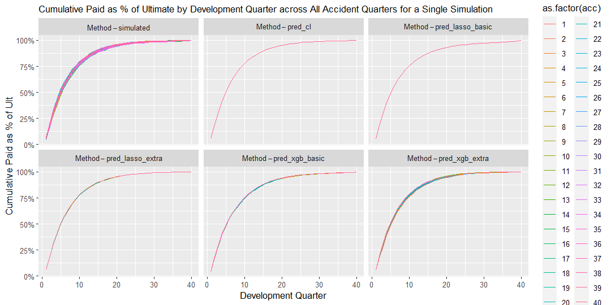
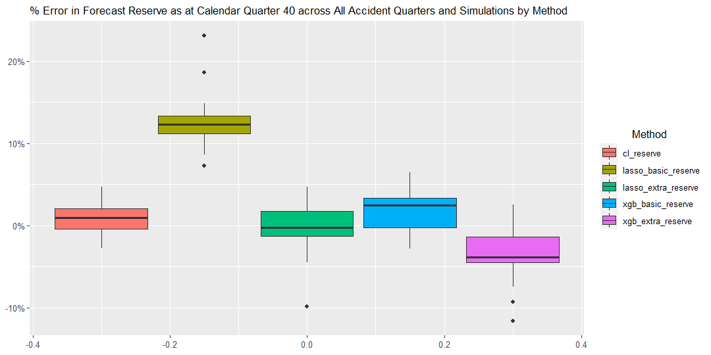
In this simple scenario, claims payments appear uniform across Accident Quarters and Calendar Periods. As a result the traditional Chain Ladder method provides accurate reserve forecasts, similar to most other methods.
17.5 Environment 2 - All payments uplifted by 30% from calender 30
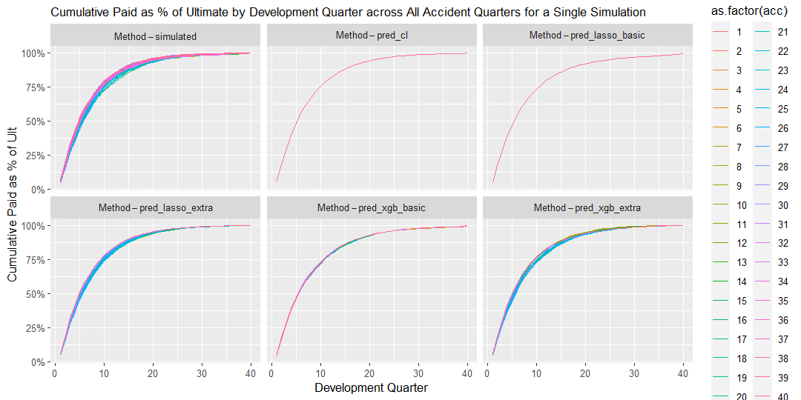
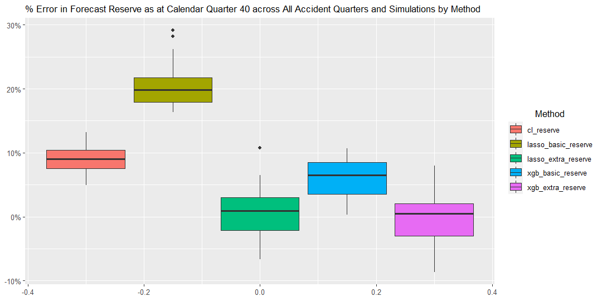
In this scenario, Calendar Period has a clear effect on claims payments, where the levels of payments increase proportionately by 30% across all Accident Periods post Calendar Quarter 30. This Calendar Period effect is well captured by the Lasso method with extra features, as demonstrated in the chart below. All other methods appear to systematically underestimate reserves across the 20 simulations.
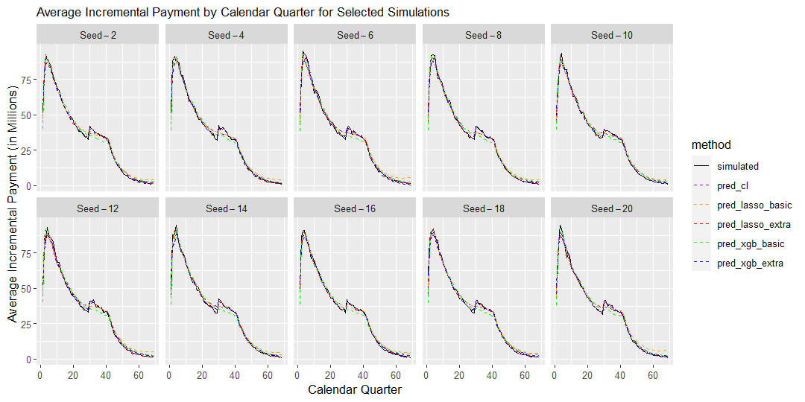
17.6 Environment 3 - Superimposed inflation jumps from 0% to 20% after calendar quarter 30
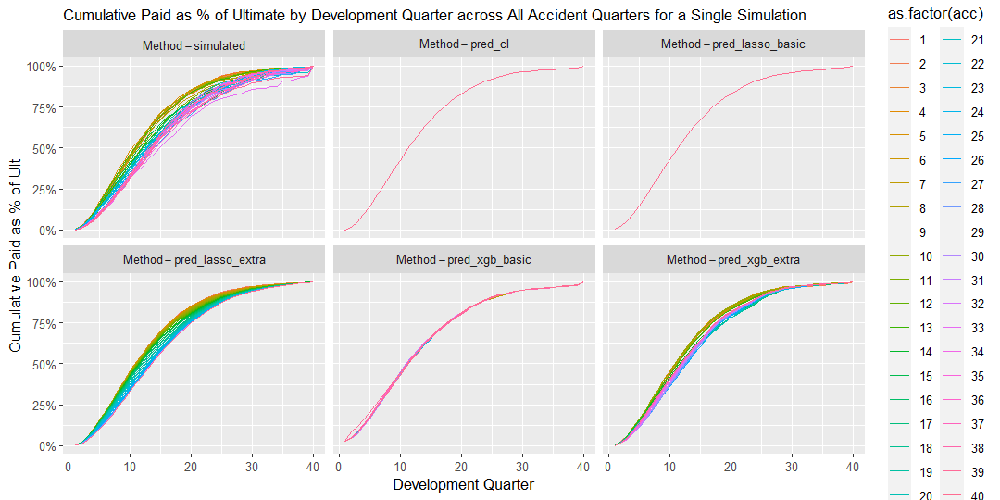

In this scenario, Calendar Period has a clear effect on claims payments, where the levels of payments inflates at a rate of 20% post Calendar Quarter 30, leading to a slow down in the cumulative claims payment pattern over Accident Quarters.This Calendar Period effect is best captured by the Lasso method with extra features, as demonstrated in the chart below. All other methods appear to systematically underestimate reserves across the 20 simulations as they do not adequately reflect the underlying claims inflation trend.

17.7 Environment 4 - Gradual increase in claims processing speed
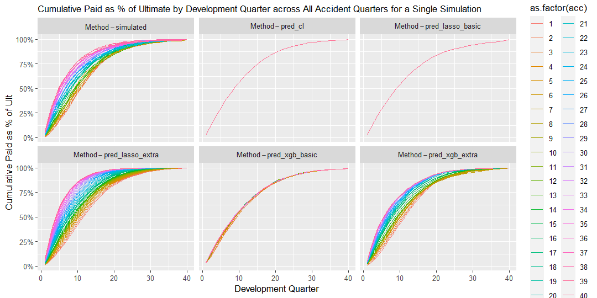
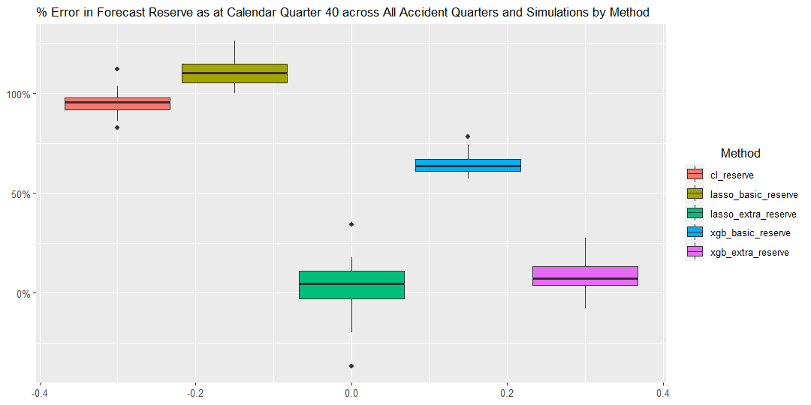
In this scenario, Accident Period has a clear effect on claims payment patterns, where the proportions of incremental payment made in earlier Development Quarters increase over more recent Accident Quarters and those made in later Development Quarters reduce over Accident Quarters. This Accident/Development Quarter interaction is well captured by both the XG Boost and Lasso methods with extra features, as demonstrated in the chart below.
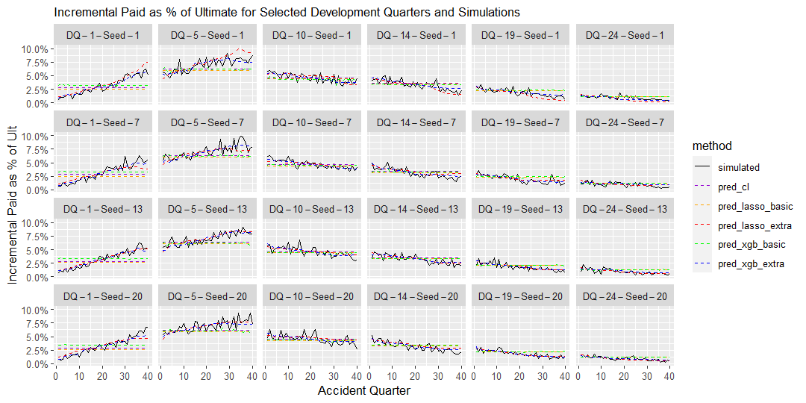
17.8 Environment 5 - Long tail claims
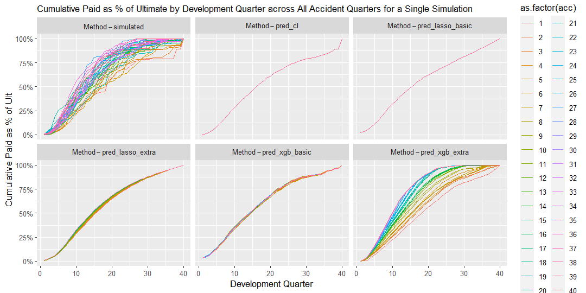
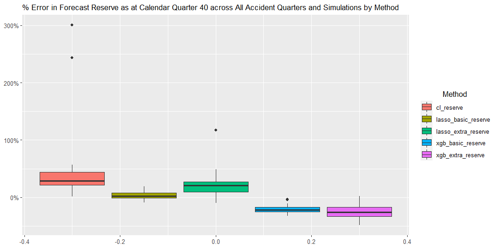
In this scenario, the long tailed and volatile nature of the claims payments led to significant distortions and errors in the reserve forecasts provided by the traditional Chain Ladder method (as expected).
Interestingly, whilst ML methods with extra features appear to capture the volatility in the claims payment patterns, they produces less accurate reserve forecasts compared to those without extra features. The XG Boost and Lasso methods without extra features on the other hand appear to provide reasonable accurate reserve forecasts over most seeds whilst capturing less volatility in the claims payment patterns.